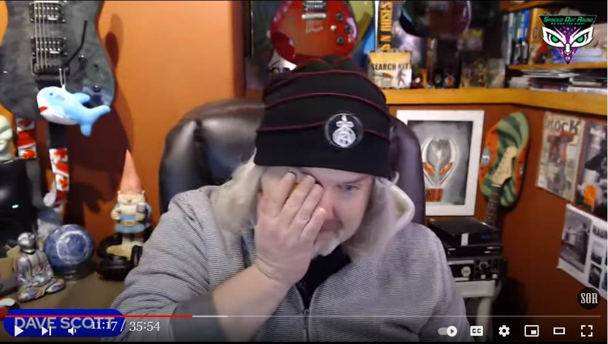

UFO/オカルト現象の謎が謎のままであり続けること…それが救いとなる
(image source: Guido Reni )
はじめに
- 長らく UFO/Bigfoot の調査で活躍していた Butch Witkowski の死去を話の導入部として、タイトルの件を述べる。
前置き
- かつて心臓発作で入院し、昨年あたりに退院し自宅で療養していた Butch Witkowski が本日、死去。 - 療養中も Dave Scott のネット番組に毎月、特別枠で出演していた。彼の出演動画を下の過去記事で取り上げたのもつい先日のことだった。 Butch Witkowski : 事故現場上空に光が出現 → 現場の警察官・消防員・医療チームが皆、謎の停止体験 （途中1） (2021-12-01)手抜き
- 11:00 今朝、（Butch Witkowski と親しい） Lon Strickler から電話で死去の知らせを受けた。 - 彼は昨夜、気分がすぐれず、夜中。病院に行くかと妻が聞いたら、朝になったらかかりつけのところで診察を受けよう…そう答えた。だが、朝になったが彼は目覚めなかった。 - Dave Scott は "We love you, Butch, and we will always miss you." と述べて涙している。 音声書写（自動生成）
展開
10:26 uh from what i know i had a long 10:28 conversation with 10:30 lon strickler 10:32 this morning shouldn't say long it 10:34 seemed long it was probably only about 10:36 five minutes 10:37 um butch wasn't feeling well last night 10:42 and 10:44 he woke up in the middle of the night 10:46 told his wife that he wasn't feeling 10:47 well 10:49 she asked if he wanted to go to the 10:51 hospital 10:52 he said no 10:54 he um 10:57 he would go in the morning to the clinic 10:58 to his specialty clinic 11:01 because he was always worried about his 11:02 heart since his heart attack 11:05 and 11:07 he didn't wake up動画（35:54）
RIP BUTCH WITKOWSKI - OUR CRANKY CURMUDGEON動画メモ
DeepL
ブッチ・ウィトコウスキーさん、安らかに眠ってください。 6年以上にわたって、ブッチ・ウィトコウスキーはSpaced Out Radioの卓越した柱でした。 彼の知識は誰にも負けないし、ブッチが何かに腹を立てているとき、彼はそれをありのままに伝えることを恐れていなかったので、彼の色あせた気難しさはいつも我々のリスナーを元気づけた。 私が初めてブッチにインタビューしたのは2015年のこと。 私は彼の声のトーンと、クリプトイド、UFO、超常現象に関する彼のストレートな率直さに脅かされました。 その最初のインタビューで、彼は人体切断と、毎年跡形もなく行方不明になる人の多さについて話しました。 それは私にとって目からウロコの話だった。 そのうち、また出演をお願いするようになりました。 2回目のインタビューで暗号について話した後、私は彼と「ストレンジ・デイズ」と名づけた月1回の特集を組まなければならないと思ったのです。 驚いたことに、彼はこの番組への出演を楽しみ、今後もSORファミリーの一員であることに前向きだった。 毎月最終月曜日は、ブッチができる限りのクリプトストーリーについて話すために設けられた。 このテーマに対する彼の愛と情熱は、彼のすべてを飲み込んでいた。 彼は、ペンシルバニアの州立公園で目撃された、「ライカン・ループ」と呼ばれる悪名高い二足歩行のイヌをどうしても見たかったのです。 2020年、私たちはブッチを大規模な心臓発作で失いそうになり、バイパス手術の大掛かりな手術につながりました。 彼は健康上の不安から休養し、回復するために何か月も番組を休む必要がありました。 しかし、彼はいつも、私たちSpaced Out Radioに戻るのが待ちきれないと言っていました。私たちは彼にとって家族のようなものだからです。 SORに戻ったとき、彼はまるでキャンディー・ストアにいる子供のように、人生の時間を過ごそうとしているように聞こえました。 ブッチは毎月、私たちと一緒に放送するのを楽しみにしていた。 彼はいつも、これが楽しみだと言っていました。 彼はSpaced Out Radioを愛していました。 彼はリスナーを愛していた。 彼は耳を傾ける誰とでもクリプトイドの話をするのが好きでした。 ロン・ストリックラーとブライアン・ボーデンから、今朝、ブッチを失ったことを知ったんだ。 彼は74歳だった。 自宅で愛妻の傍らで息を引き取った。 ブッチはいいやつだった。 とても正直で... 率直な人だった 私たちは今、彼が解決しようとしていた世界の謎の答えを持っていることを願うばかりです。 ブッチ、愛してるよ。そして、いつも寂しいよ。原文
Rest In Peace, Butch Witkowski For more than six years, Butch Witkowski has been a pillar of excellence on Spaced Out Radio. His knowledge was second to none, and his jaded crankiness always perked up our listeners because when Butch was pissed off about something, he wasn't afraid to tell it like it is. I first interviewed Butch in 2015. I was intimidated by the tone of his voice and the straight forward candor he had regarding the cryptid, UFO, and paranormal phenomenon. On that first interview, he discussed human mutilations and the amount of people who go missing annually without a trace. It was an eye opener for me. Over time, I asked him to come on the show again. After that second interview about talking cryptids, I knew I had to make a monthly feature with him, which we would call 'Strange Days'. To my surprise, he enjoyed being on the show, and was more than open to be a part of the SOR family going forward. The final Monday of each month was set aside for Butch to talk about all of the cryptid stories he could. His love and passion for the subject was all consuming of him. He desperately wanted to see one of these infamous bi-pedal canines that people had been witnessing in the state parks of Pennsylvania, nicknamed the 'Lycan Loop'. In 2020, we nearly lost Butch to a massive heart attack, which led to major by-pass surgery. He needed a number of months off the show to rest and recuperate from the health scare. But he always told me he couldn't wait to get back with us on Spaced Out Radio because we were like family to him. When he returned to SOR, he sounded like a kid in the candy store, about to have the time of his life. Butch looked forward to coming on the air with us, every month. He always stated this was something he looked forward to. He loved Spaced Out Radio. He loved our listeners. He loved talking cryptids with anyone who'd listen. I found out from Lon Strickler and Bryan Bowden that we lost Butch this morning. He was 74. He passed away at his home, with his lovely wife by his side. Butch was one of the good ones. Honest as can be. Straight forward as can be. We can now only hope, he's got the answers to all the world's mysteries that he was trying to solve. We love you, Butch, and we will always miss you. Dave Scott - Host, Spaced Out Radioコメント1
- 上で掲載した過去記事の動画に出演した Butch Witkowski は療養中のものだったのだろう。最初、彼が急に老けていたので驚いたが、まさかこれほど急に亡くなるとは… - 私も、Butch Witkowski が元気だった頃から彼の登場した Youtube 動画を多数、見聞きしていたので、訃報には驚いた。コメント2
- ベテランの 民間 UFO/超常現象/オカルト 研究者は大半が高齢もしくは老齢期に差し掛かっている。この Blog で何度もインタビュー動画などを紹介してきた 民間 UFO/オカルト研究者が既に何人も亡くなっている。今後も彼らの訃報を頻繁に見聞きすることになるのは避けられない。 - Butch Witkowski もそうだが、彼らは人生の大半を UFO/超常現象/オカルト の追求と解明に費やしてきた。その謎の正体が何も掴めぬまま、その解明の緒すら掴めぬまま人生を終えることになった。それは彼らにとって、とても心残りなことだが、一方で謎が謎のままであり続けることが彼らの「救い」にもなっている。 - なぜ、救いなのか？ 彼らにとって UFO/超常現象/オカルト は大げさにいえば魂の救済になっている。自覚せずとも彼らはみな、この矮小な地上世界の日常に退屈し、うんざりしている。あれこれ不平不満を言いながらも、日常にそこそこ満足し、同時に深く絶望「も」している。 - 日常世界という逃げようのない牢獄の、天井付近の鉄格子のはまった小さな窓から見える青空だけが彼らに残された希望となっている。現代人である彼らにとって宗教はもう救いにはなりえない。彼らにとって、UFO/超常現象/オカルト はその鉄格子から見える青空となっている。 - いわば、かつての宗教的な救いのイメージの現代的な代替え品となっている。彼らにとって UFO/超常現象/オカルト はこの日常世界を超越した驚愕の世界、真に意義深い世界、いつかは天から降りてくる筈の理想郷となっている。それゆえに UFO 業界では精神世界信者がはびこっている。 - UFO/ET/オカルト現象――これらの謎が謎のままであり続けること…それが救いとなる。いつか到来する筈の救世主の再臨を待ち続ける信者にとって、その救世主が到来しないこと…それが救いとなる。なぜなら、救世主は実在しないゆえに、到来する救世主は全て偽物となり、裏切られるのは必然だから。 - この Blog を始めた時には予想もしなかったことだが…。「死後の意識の存続はない」、「UFO/超常現象/オカルト の核心部分は脳内バグ共鳴の産物だ」、「人間が憧れるものはみな虚構。超越的世界や真理が虚構なのは必然（*1）」…そう判断を下した人間には、そのような類の救いは願い下げとなる。（*1）
- 人間が憧れるものはみな虚構。超越的世界や真理が虚構なのは必然… - 下の過去記事で「虚構ゆえの真実」について述べた。真実の観念こそ虚構だと。 『虚構ゆえの真実』の「真実」の観念こそが虚構 （途中1） (2021-12-30) - だが、もっとストレートに言い換えることもできる。それが「虚構」であるからこそ、人間にとってそれは「真実」と見なされてきたのだ…と。つまり、虚構ゆえの真実。 (2022-01-13)
初出
追悼：Butch Witkowski が（心臓疾患で）死去。享年 74 (2022-01-14)
この記事の完了度: